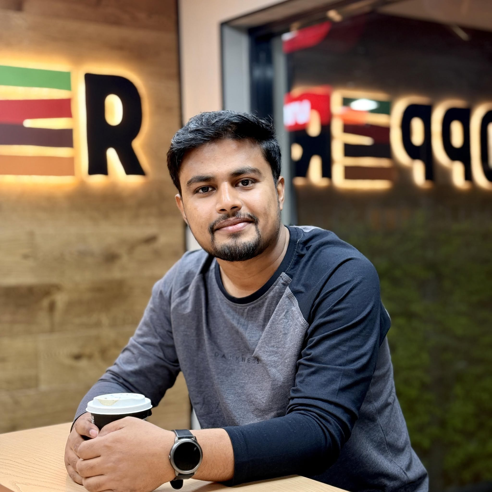

Biomedical AI & Medical Imaging
Ph.D. Researcher · Texas Tech University
Bridging deep learning, medical imaging, and computational health to build scalable AI diagnostic tools for obesity, metabolic disorders, type 2 diabetes mellitus, fatty liver disease (MASLD/NAFLD), and related chronic conditions.

About
I am a Research Assistant at Texas Tech University, specializing in AI-driven medical imaging, computer vision, and digital health diagnostics for metabolic disorders, fatty liver diseases, and chronic health conditions. I hold M.Sc. and B.Sc. degrees in Computer Science and Engineering.
I have authored peer-reviewed scientific publications with 2,226+ citations and an h-index of 25, edited 8 scholarly books with premier publishers, and hold multiple granted patents. My Field-Weighted Citation Impact (FWCI) stands at 2.09 — placing my work in the Scopus Top 1% globally.
I serve as Associate Editor and Academic Editor across leading Q1/Q2 journals (Frontiers in Oncology, Discover Applied Sciences, PLOS ONE, PLOS Digital Health), and my current works bridge deep learning innovation with clinical workflow optimization to build scalable diagnostic tools and advance computational healthcare education.
"The bridge between AI innovation and clinical deployment is where lives are truly changed — and that is precisely where I choose to work."
— Md. Mehedi Hassan, Ph.D. ResearcherFocus Areas
My research spans AI-driven medical imaging, computational health diagnostics, and deep learning for chronic disease management — bridging innovation with clinical impact.
Developing 3D volumetric segmentation and deep learning architectures (3D U-Net, MONAI) for automated diagnosis of obesity, MASLD/NAFLD, and metabolic disorders from CT/MRI scans.
Deploying PyTorch, Graph Neural Networks (GNNs), and Generative AI to tackle high-dimensional clinical imaging data with clinically interpretable explainability.
Investigating AI-driven diagnostics for type 2 diabetes mellitus, fatty liver disease, and obesity using multi-modal clinical data and machine learning pipelines.
Engineering advanced ML pipelines for automated EEG signal processing and real-time epileptic seizure detection with high diagnostic sensitivity.
Developing federated learning architectures and XAI frameworks for privacy-preserving multi-institutional medical data collaboration with interpretable outcomes.
Serving as Associate/Academic Editor for Frontiers in Oncology, Discover Applied Sciences, PLOS ONE & PLOS Digital Health, guiding peer review across AI and biomedical domains.
Research Impact
Quantitative milestones reflecting the scope, rigour, and translational impact of a research programme dedicated to biomedical AI and computational healthcare.
Scholarly Output
Peer-reviewed research spanning biomedical AI, medical imaging, and computational healthcare. First and corresponding author work is underlined.
The Lancet Infectious Diseases — Elsevier · Impact Factor: 29.4
Engineering Applications of Artificial Intelligence — Elsevier · IF: 8.0 · Vol. 144: 110117
IEEE Journal of Biomedical and Health Informatics — IEEE · IF: 6.8
Computers and Electrical Engineering — Elsevier · IF: 4.9 · Vol. 115: 109130
Scientific Reports — Nature Portfolio · IF: 3.9 · Vol. 14: 1524
IEEE Access — IEEE · IF: 3.6 · Vol. 11: 132196–132222
Technical Skills
A comprehensive computational and research toolkit applied to biomedical AI, medical imaging, and clinical data science across the full research lifecycle.
Curriculum Vitae
An academic and professional trajectory built on rigorous training, international collaboration, and a commitment to high-impact biomedical AI science.
Get in Touch
I welcome inquiries regarding research collaboration, academic consultation, speaking engagements, and editorial review partnerships.